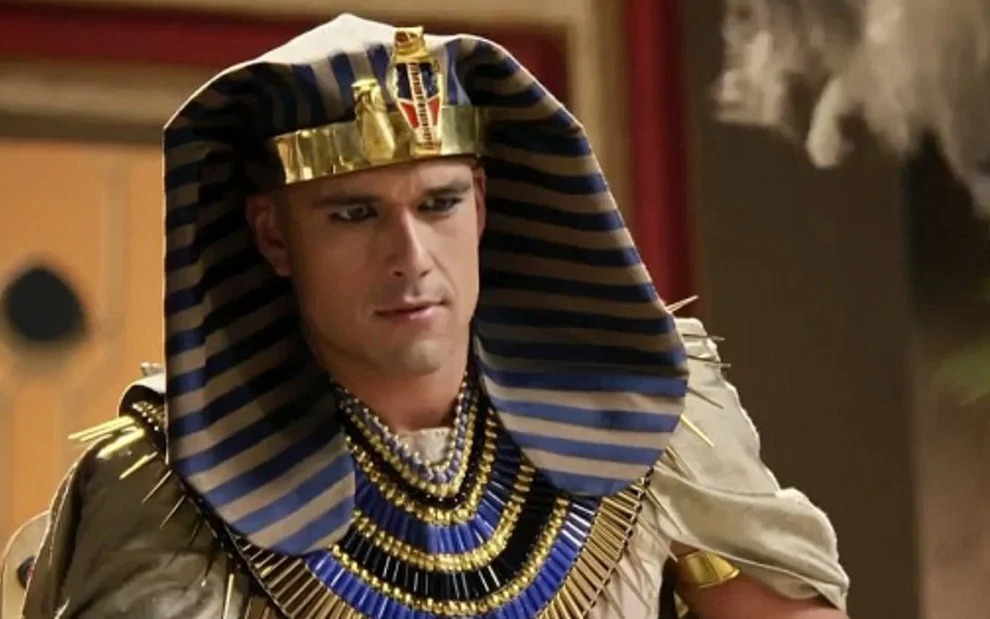

Ramessés II 
Ramessés II, o Grande ou Ramsés II, também conhecido pela titulatura helenizada Osimandias
(em grego: Ὀσυμανδύας), popularizada em inglês por Percy Shelley como Ozymandias, foi o terceiro
faraó da XIX dinastia egípcia, uma das dinastias que compõem o Império Novo. Reinou entre
aproximadamente 1279 a.C. e 1213 a.C., tendo tido um dos mais prestigiosos reinados da história
egípcia, nos aspetos econômico, administrativo, cultural e militar. Teve também um dos mais
longos reinados da história egípcia, governando a nação por 66 anos. Houve 11 soberanos com o
nome Ramessés no reino do Egito, mas somente a ele foi atribuído o epíteto de "o Grande".
Durante sua juventude, o príncipe Ramessés foi treinado no exército, o que mais tarde faria command
que o mesmo se tornasse um reconhecido líder militar. Com a idade de 24 anos, Ramessés II
ascendeu ao trono. Na primeira instância de seu reinado, esteve focado em manobras militares,
proporcionou aos exércitos maior importância, sendo bem treinados e melhor tratados, como também
foram feitas construções de fortificações nas fronteiras egípcias que ajudavam na movimentação
das tropas e garantia segurança e proteção ao Egito. Além das conquistas militares, o que também
fez com que Ramessés II fosse conhecido como “o Grande” foi a prosperidade de seu reinado onde,
por exemplo, houve a construção de enormes templos.
Sua múmia, preservada no Museu Egípcio no Cairo, é a de um homem já idoso com um rosto
longo e estreito, nariz proeminente e maxilar maciço. O reinado de conquistas e prosperidades
de Ramessés II, o Grande, foi o último pico de poder do reino egípcio. Após sua morte o Egito
conseguiu manter sua soberania. Ele foi um líder notável, exímio militar e administrador competente
e fez com que o país fosse próspero em seu reinado. Alguns de seus feitos, no entanto,
certamente devem ser levados para o seu estilo de publicidade, seu nome e seus registros
de batalhas que foram encontrados em todo o Egito e na Núbia.